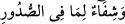
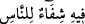
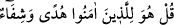

zalimlerin ise yalnızca ziyanını artırır.
“Biz, Kur’an’dan öyle bir şey indiriyoruz ki o, müminler için” kalblerdeki şüphe ve
evham hastalıklarına “şifâ ve rahmettir;” Bu mü’minlere hastır. Çünkü ondan istifâde
edenler onlardır. Bir bütün olarak Kur’an mü’minlerin dînî hayatlarını düzeltmede ve
nefislerini ıslah etmede hastalara verilen şifâlı ilaç gibidir. “Zalimlerin ise yalnızca
ziyânını artırır.” Yâni Kur’an, her ne kadar kendisi bizzat hastalıklar için şifâ olsa da
onu yalanlayan ve eşyayı yerli yerine koymayan kâfirlerin bu küfürleri ve yalanlamaları
sebebiyle küfür ve yalanlamalarını artırmaktan başka bir işe yaramaz.
Bu âyette, hidâyete ve doğru yola ulaşırken mü’minlere ârız olan şüphelerin
hastalıklara benzediği, kâfirlerin câhillik ve inadlarının ise ölüm ve helâk gibi olduğuna
bir îmâ vardır. Burada aynı zamanda Kur’an’ın hayrete düşürücü özelliklerinden biri de
görülür. Çünkü Kur’an hem şifânın, hem de helâkin kaynağı olmaktadır. Tıpkı yağmurun
bir kısmının mahallin istîdâdının olup olmamasına göre inci ve zehir olması gibi.
Feyzi kabul etmek için cevheri temiz olmak gerektir
Yoksa her taş ve çamur, inci ve mercan olmaz
Bilesin ki Kur’an cismânî hastalıklara da şifâdır. Hikâye olunduğuna göre Üstad
Ebü’l-Kasım Kuşeyrî’nin çocuğu ağır bir hastalığa yakalanmış ve iyileşmesinden ümit
kesilmişti. Bu Üstad’a ağır geldi. Bir gün rüyasında Hak Teâlâ’yı gördü ve bu durumu
şikâyet etti. Hak Teâlâ ona şöyle buyurdu: “Şifâ âyetlerini bir araya getir, onları hastaya
oku. Onları bir kabın içerisine yaz ve içine bir içecek dök. Sonra onu hastaya içir.”
Üstad söylenenleri yaptı ve çocuk hastalıktan kurtuldu.
Kur’an’da şifâ âyetleri altı tanedir:
“Mü’minler toplumunun göğüslerine şifâ versin.” (et-Tevbe, 9/14);
“Göğüslerde olana şifâdır” (Yûnus, 10/57);
“Onda insanlar için şifâ vardır.” (en-Nahl, 16/69);
“Biz Kur’an’dan mü’minler için şifâ ve rahmet olan şeyler indiriyoruz.” (el-İsrâ,
17/82);
“Hastalandığım zaman bana şifâ veren O’dur.” (eş-Şuarâ, 26/80);
“De ki: O mü’minler için bir hidâyet ve şifâdır.” (Fussılet, 41/44).
Tâcüddîn Sübkî Şâfiî Tabakât’ında: “Birçok meşâyıhın hastaların şifâ bulmaları için
bu âyetleri kaplar içerisine yazdıktan sonra suyunu hastalara içirdiklerini gördüm” der.
Hz. Peygamber (s.a.)’in “Kur’an’dan şifâ aramayana Allah şifâ ihsan etmesin”[134]
sözü hem cismânî, hem de rûhânî hastalığa şâmildir. Şeyh Temîmî (r.h.) da Havâssu’l-